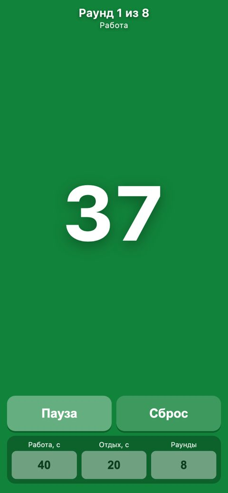

Подойдёт почта, к которой у тебя постоянный доступ. Gmail с адресом @gmail.com — один из вариантов; универсального требования именно к окончанию «.com» у этих инструментов нет.
Если почта уже есть, сначала попробуй её или вход через свой Google/Apple-аккаунт.
Для нового Google-аккаунта открой форму регистрации Google. Выбери личный аккаунт, заполни имя и данные, предложенные формой, выбери адрес и пароль.
На телефоне можно открыть Gmail → значок профиля → добавить аккаунт → Google → создать аккаунт. Если регистрация в браузере не получается, это альтернативный путь, а не гарантия отсутствия проверок.
Пройди проверки, которые запросит Google. Добавь способ восстановления и сохрани данные входа у себя. Google также позволяет использовать существующую почту другого сервиса.
Проверь написание адреса, папку спама и последнее письмо с кодом.
Используй тот же способ входа, что при регистрации. Вход через Google и вход по другой почте могут вести в разные аккаунты.
Попробуй другой браузер или устройство. Не повторяй запросы кода непрерывно: дождись срока на экране.
Если сервис сообщает о неподдерживаемой стране или типе аккаунта, смена почты доступ не вернёт. Проверь официальные условия по ссылке выше.
DeepSeek умеет не только отвечать текстом. Попроси страницу — и кнопка «Run» над кодом запустит её прямо в чате. За две минуты у тебя будет таймер для домашней тренировки: работа, отдых, раунды, сигналы. Программировать не нужно.

Таймер, который DeepSeek собрал по запросу из урока. Так он выглядит на экране телефона.
Запрос
Каждый пункт — то, что важно на тренировке: цифры видно с пола, цвет подсказывает фазу, сигнал предупреждает о смене. Пятый пункт — для нейросети: так таймер не собьётся, если телефон задумается. Копируй как есть.
Запрос
Сделай таймер для домашней тренировки — одну HTML-страницу, которая работает на телефоне.
1. Настройки: работа (секунд), отдых (секунд), раунды. По умолчанию 40, 20 и 8.
2. Огромные цифры обратного отсчёта — чтобы видеть с пола на расстоянии двух метров. Фон: работа — зелёный, отдых — синий. Сверху — «Раунд 3 из 8».
3. Звук: короткий сигнал за 3, 2 и 1 секунду до смены и длинный — на смене. Звук включается только после нажатия «Старт».
4. Большие кнопки «Старт/Пауза» и «Сброс».
5. Таймер не должен сбиваться, если телефон тормозит: считай время от момента старта по часам (performance.now), а не прибавлением секунд в setInterval.
6. Пока идёт тренировка, экран не гаснет: navigator.wakeLock, если браузер его поддерживает.
7. Подписи на русском, всё помещается на экран телефона.
Пришли весь код одним блоком.
Запусти
Открой chat.deepseek.com на компьютере, вставь запрос и отправь. У нас код пришёл меньше чем за минуту
Над блоком кода справа — кнопка «Run». Она откроет панель с живым таймером
Нажми «Старт». Звук включится только после нажатия — так устроены браузеры
Проверь за 20 секунд
Ждать восемь минутных раундов не нужно. Поставь работу 5 секунд, отдых 4, раундов 2 — и смотри:
Короткая проверка
ЦветРабота — зелёный фон, отдых — синий
СигналыТри коротких перед сменой и длинный на смене
РаундыПосле первого отдыха — «Раунд 2 из 2»
ФинишПосле второго раунда — «Тренировка завершена»
Мы прогнали это роботом: фазы меняются секунда в секунду, даже если телефон «зависнет» на полторы секунды.
Что нашлось у нас
С первого раза таймер работал правильно. Но две мелочи робот всё же поймал. После последнего раунда таймер ещё 4 секунды показывал «Отдых». А поля настроек были высотой 39 пикселей — пальцем в них легко промахнуться. Мы описали оба признака, и DeepSeek исправил их с первого раза:
Запрос
Две правки. 1) После последнего раунда отдых не нужен: сразу «Тренировка завершена» и длинный сигнал. Сейчас таймер ещё 4 секунды показывает «Отдых». 2) Поля настроек сделай повыше — не меньше 48 пикселей, сейчас в них трудно попасть пальцем. Остальное не меняй. Пришли весь файл целиком.
Так и пиши правки: что видно сейчас и как должно быть. Просьбу «почини» без подробностей нейросеть поймёт по-своему.
Если что-то не так
Кнопки «Run» нет
Она появляется над блоком кода HTML. Если код пришёл кусками или без блока, попроси: «Пришли всю страницу одним блоком html»
Нет звука
Звук включается после «Старт». На iPhone проверь переключатель «Без звука» — он глушит звук страниц. С iOS 17 помогает правка: «Поставь navigator.audioSession.type = 'playback' перед первым звуком»
Хочется таймер на телефоне
Сохрани код кнопкой «Download» над блоком. Как поставить страницу значком на телефон — урок «Своя страница» в курсе «Проекты»
Итоги
Просишь у DeepSeek страницу и запускаешь её кнопкой «Run»
Пишешь в запросе то, что важно в деле: видно с пола, цвет, сигнал
Проверяешь на коротких числах за 20 секунд
Просишь доводку признаками: что видно и как должно быть
Теперь твоя очередь
Собери таймер под свою тренировку или под другое дело с интервалами — например, помидор: 25 минут работы и 5 отдыха. Проверь на коротких числах.
Таймер запускается кнопкой «Run»
Фазы меняются вовремя и разным цветом
Сигналы слышны
После последнего раунда — сразу финиш
Урок рассчитан на сайт chat.deepseek.com на компьютере; у нас интерфейс был на английском. Названия кнопок могут отличаться в приложении и после обновлений. Подписка на наше обучение не включает платные тарифы нейросетей.
DeepSeek — запросы урока проверены 2 октября 2026, режим по умолчанию. Таймер проверен роботом: смены фаз, цвета, сигналы, экран телефона.
Что дальше
Следующий урок — «Настрой разговор под себя». Создашь переносимый шаблон своих правил.